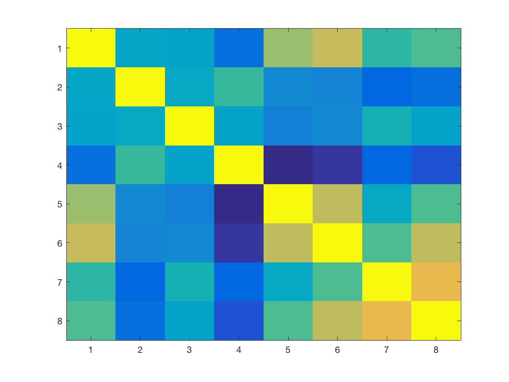
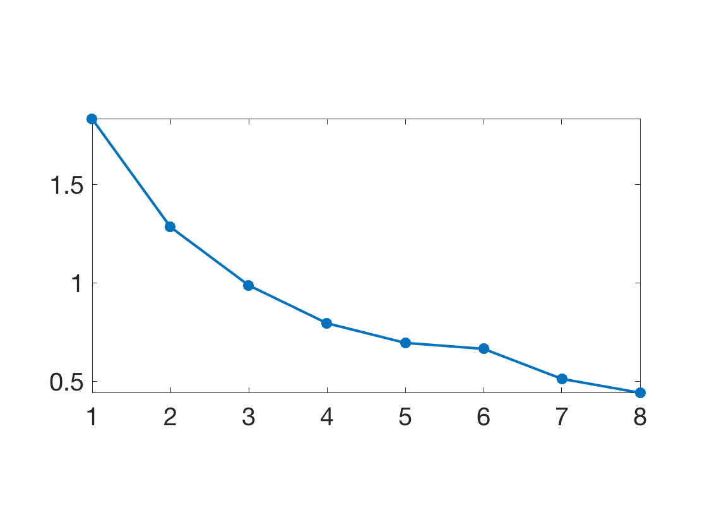
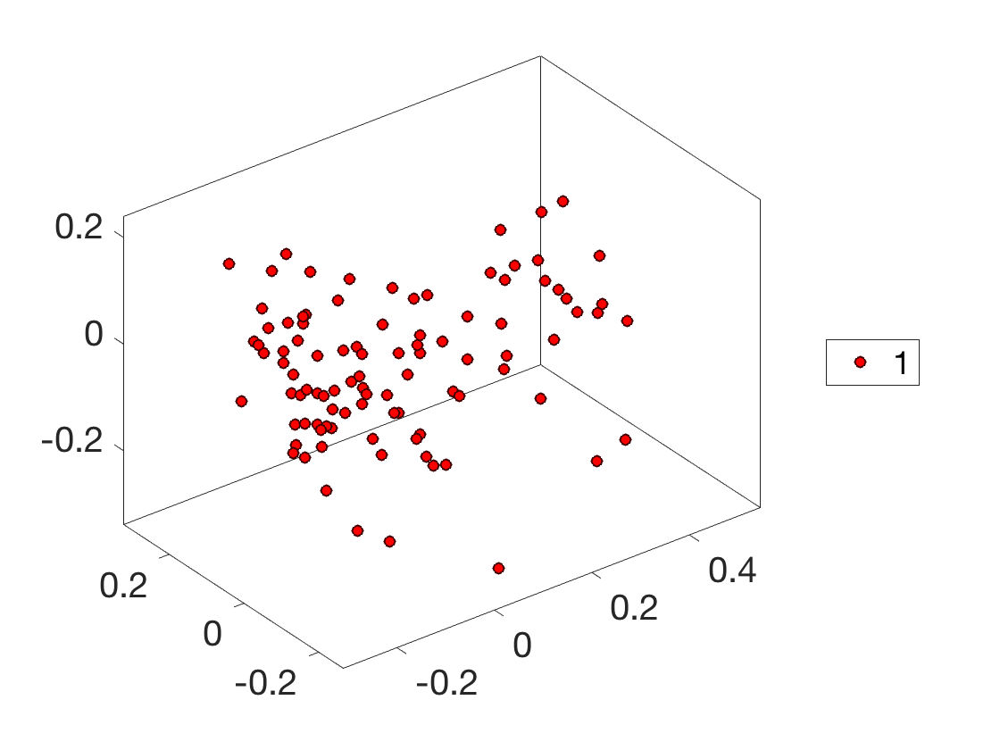
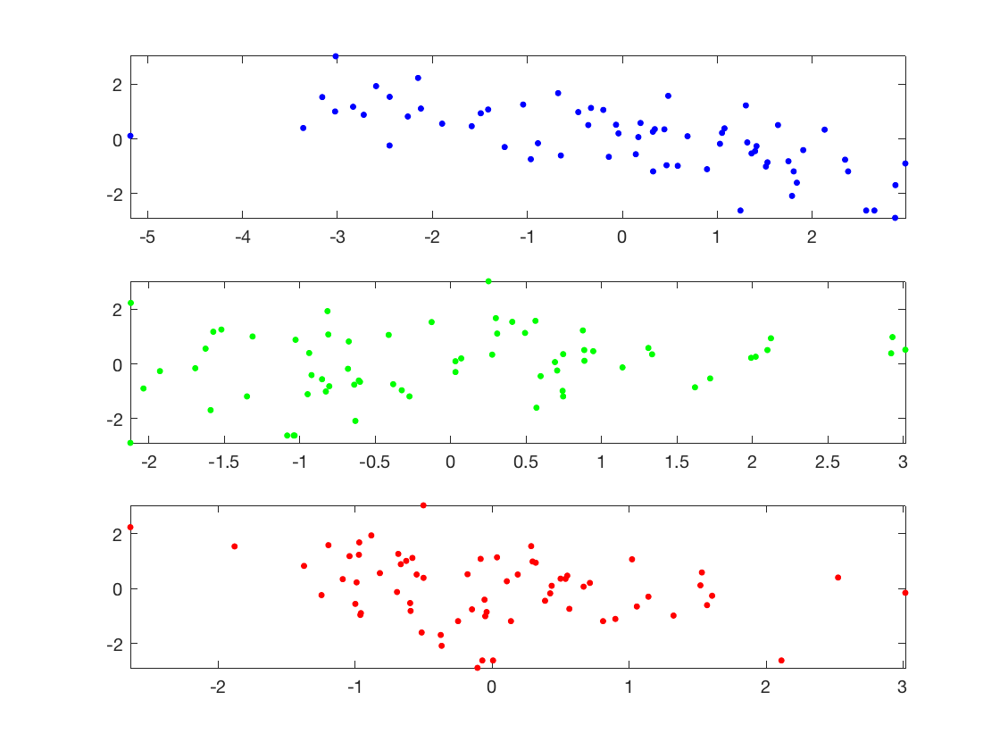
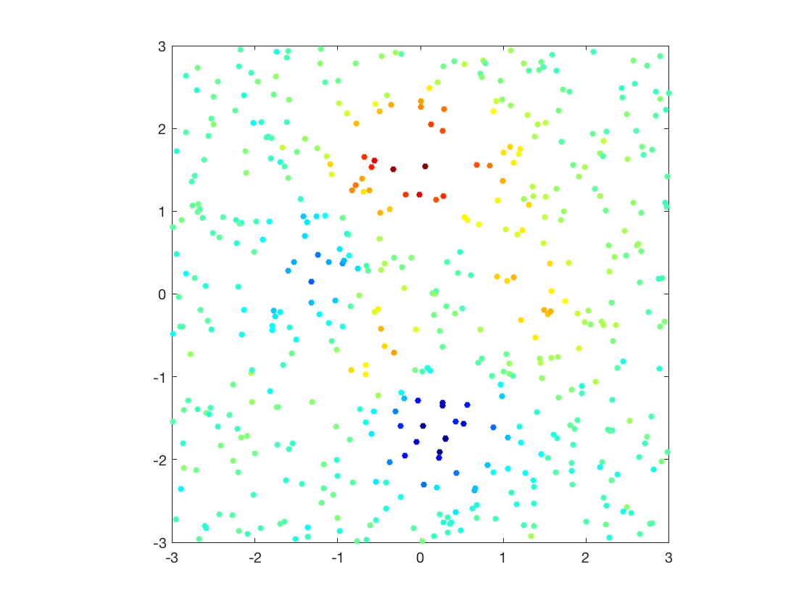
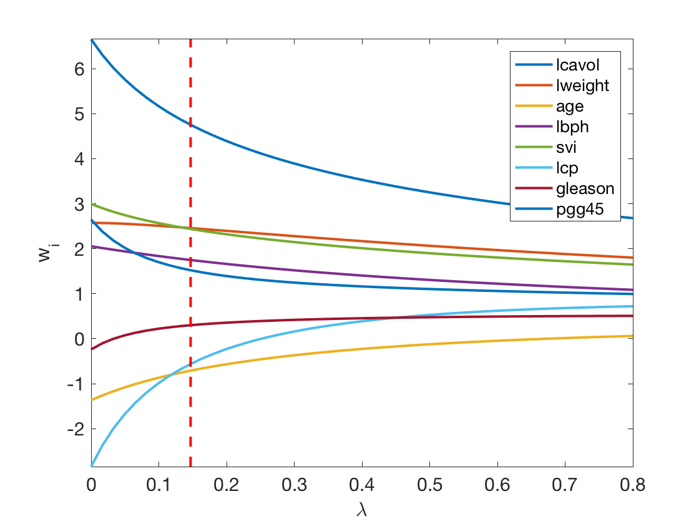

Linear Regression and Kernel Methods
This tour studies linear regression method, and its non-linear variant using kernlization.
Contents
Installing toolboxes and setting up the path.
You need to download the following files: general toolbox.
You need to unzip these toolboxes in your working directory, so that you have toolbox_general in your directory.
For Scilab user: you must replace the Matlab comment '%' by its Scilab counterpart '//'.
Recommandation: You should create a text file named for instance numericaltour.sce (in Scilab) or numericaltour.m (in Matlab) to write all the Scilab/Matlab command you want to execute. Then, simply run exec('numericaltour.sce'); (in Scilab) or numericaltour; (in Matlab) to run the commands.
Execute this line only if you are using Matlab.
getd = @(p)path(p,path); % scilab users must *not* execute this
Then you can add the toolboxes to the path.
getd('toolbox_general/');
Dataset Loading
Helpers.
SetAR = @(ar)set(gca, 'PlotBoxAspectRatio', [1 ar 1], 'FontSize', 20);
Load the dataset.
name = 'boston_house_prices'; load(['ml-' name]);
Randomly permute it.
A = A(randperm(size(A,1)),:);
Separate the features \(X\) from the data \(y\) to predict information.
X = A(:,1:end-1); y = A(:,end);
\(p\) is the number of samples, \(n\) is the dimensionality of the features,
[p,n] = size(X);
Dimenionality Reduction and PCA
In order to display in 2D or 3D the data, dimensionality is needed. The simplest method is the principal component analysis, which perform an orthogonal linear projection on the principal axsis (eigenvector) of the covariance matrix.
Compute empirical mean \(m \in \RR^n\) and covariance \(C \in \RR^{n \times n}\).
m = mean(X,1); Xm = X-repmat(m, [p 1]); C = Xm'*Xm;
Display the covariance matrix.
clf; imagesc(C);
Compute PCA ortho-basis.
[U,D] = eig(C);
[d,I] = sort(diag(D), 'descend');
U = U(:,I);
Compute the feature in the PCA basis.
z = (U'*Xm')';
Plot sqrt of the eigenvalues.
clf; plot(sqrt(d), '.-', 'LineWidth', 2, 'MarkerSize', 30); axis tight; SetAR(1/2);
1D plot of the function to regress along the main eigenvector axes.
col = {'b' 'g' 'r' 'c' 'm' 'y' 'k'};
clf;
for i=1:min(n,3)
subplot(3,1,i);
plot(z(:,i), y, '.', 'Color', col{i}, 'MarkerSize', 20);
axis tight;
end

Linear Regression
We look for a linear relationship \( y_i = \dotp{w}{x_i} \) written in matrix format \( y= x w \) where the rows of \(x\) stores the features \(x_i\).
Since here \( p > n \), this is an over-determined system, which can solved in the least square sense \[ \umin{ w } \norm{xw-y}^2 \] whose solution is given using the Moore-Penrose pseudo-inverse \[ w = (x^\top x)^{-1} x^\top y \]
Split into training and testing.
p0 = round(.5*p); p1 = p-p0; X0 = X(1:p0,:); y0 = y(1:p0); X1 = X(p0+1:end,:); y1 = y(p0+1:end);
Least square solution.
w = (X0'*X0) \ (X0'*y0);
Mean-square error on testing set.
E = sqrt( sum( (X1*w-y1).^2 ) / p1 );
Regularization is obtained by introducing a penalty. It is often called ridge regression, and is defined as \[ \umin{ w } \norm{xw-y}^2 + \lambda*\norm{w}^2 \] where \(\lambda>0\) is the regularization parameter.
The solution is given using the following equivalent formula \[ w = (x^\top x + \lambda \Id_n )^{-1} x^\top y \] \[ w = x^\top ( x x^\top + \lambda \Id_p )^{-1} y \] When \(n<p\) (which is the case here), the first formula should be prefered.
In contrast, when the dimensionality \(n\) of the feature is very large and there is little data, the second is faster. Furthermore, this second expression is generalizable to Kernel Hilbert space setting, corresponding possibly to \(n=+\infty\) for some kernels.
lambda = .1;
w = (X0'*X0+lambda*eye(n)) \ (X0'*y0);
w1 = X0'*( (X0*X0'+lambda*eye(p0)) \ y0 );
fprintf('Error (should be 0): %.4f\n', norm(w-w1)/norm(w));
Error (should be 0): 0.0000
Exercice 1: (check the solution) Display the evolution of the error \(E\) as a function of \(\lambda\).
exo1;
Exercice 2: (check the solution) Display the regularization path, i.e. the evolution of \(w\) as a function of \(\lambda\).
exo2;
Exercice 3: (check the solution) Perform feature selection using \(\ell^1\) regularization (aka the Lasso) \[ \umin{ w } \norm{xw-y}^2 + \lambda*\norm{w}_1 \]
exo3;
Kernelized Ridge Regression
Generate synthetic data in 2D. Add noise to a deterministic map.
B = 3;
p = 500; n = 2;
X = 2*B*rand(p,2)-B;
rho = .5; % noise level
y = peaks(X(:,1), X(:,2)) + randn(p,1)*rho;
Display as scattered plot.
clf; scatter(X(:,1), X(:,2), ones(p,1)*20, y, 'filled'); colormap jet(256); axis equal; axis([-B B -B B]); box on;

Macro to compute pairwise squared Euclidean distance matrix.
distmat = @(X,Z)bsxfun(@plus,dot(X',X',1)',dot(Z',Z',1))-2*(X*Z');
Gaussian kernel.
sigma = .3; K = @(X,Z)exp( -distmat(X,Z)/(2*sigma^2) );
Weights.
lambda = 0.01; r = (K(X,X)+lambda*eye(p))\y;
Regressor.
Y = @(x)K(x,X)*r;
Evaluation on a 2D grid.
q = 101; t = linspace(-B,B,q); [v,u] = meshgrid(t,t); Xn = [u(:), v(:)];
Display as an image.
yn = reshape(Y(Xn),[q,q]); clf; imagesc(t,t,yn); axis image; axis off; colormap jet(256);
Exercice 4: (check the solution) Display the evolution of the regression as a function of \(\sigma\).
exo4;
Exercice 5: (check the solution) Apply the kernelize regression to a real life dataset. Study the influence of \(\la\) and \(\si\).
exo5;